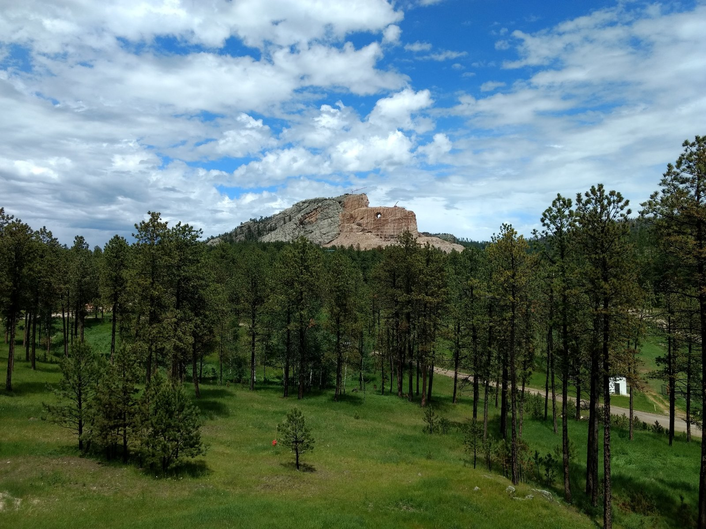
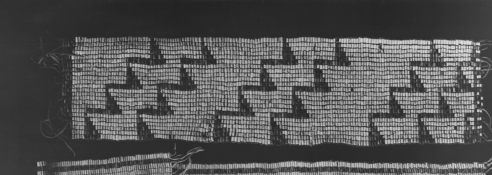
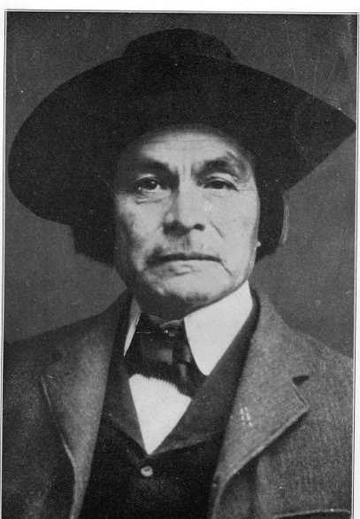
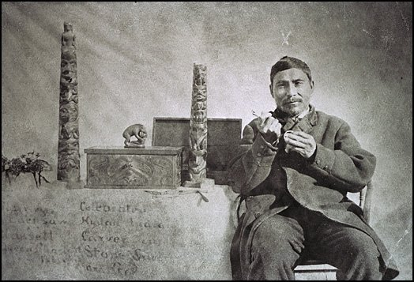
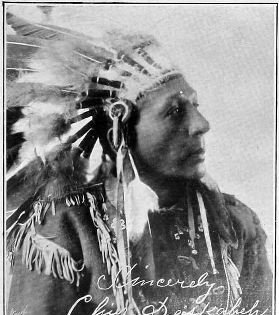
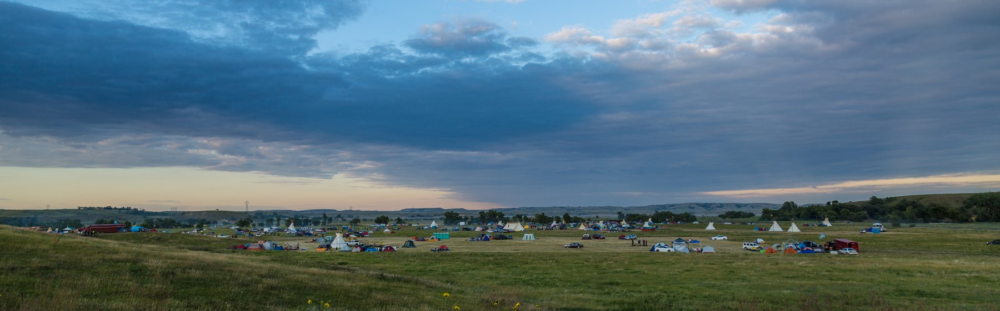

Savvy Security LLC · Security Architecture
Fires and Failure Domains
The Očhéthi Šakówiŋ as a security architecture — Indigenous federation, adversarial naming, and what defenders can learn from a political system that has outlived every government that tried to replace it.
A Note on the Framing
There is a lazy version of this essay, and it is worth naming so we can avoid it. The lazy version treats a living people as a metaphor — mines their history for punchy slide-deck analogies, declares the Great Law of Peace “basically zero trust,” and moves on. That version is both bad history and bad security thinking.
The useful version is different. Security architecture is the study of how systems survive sustained, adaptive, well-resourced adversaries over long time horizons. Almost nothing in computing has been tested that way. Most of our field’s “long-lived systems” are forty years old. The Očhéthi Šakówiŋ has been under continuous, deliberate, state-backed attack for roughly two hundred years — attacks aimed specifically at its governance layer, its identity layer, its records, and its ability to authenticate its own decisions — and it is still running.
That is a legitimate object of study. The lessons are real. But the subject is a nation of people, not a case study, and the dispossession described below is ongoing rather than historical. Both things are true.
Part I — The Architecture
What the system actually was
Očhéthi Šakówiŋ means “Seven Council Fires.” It is the self-designation of a broad alliance of peoples speaking three related Siouan variants, commonly known by the exonym “Sioux.” The three divisions and their fires:
- Dakota (Isáŋyathi / Santee) — Mdewakaŋtoŋwaŋ, Waȟpékhute, Waȟpétȟuŋwaŋ, Sisítȟuŋwaŋ. Eastern woodlands, Minnesota lake country, economies built on wild rice, fish, deer, maple.
- Western Dakota — Iháŋktȟuŋwaŋ (Yankton), Iháŋktȟuŋwaŋna (Yanktonai). The prairie transition zone, controlling the pipestone quarries and much of the riverine trade.
- Lakota (Thítȟuŋwaŋ / Teton) — the seventh fire, which subdivided into seven bands of its own: Oglála, Sičháŋǧu, Húŋkpapȟa, Mnikȟówožu, Sihásapa, Itázipčho, Oóhenuŋpa.
Each fire was an oyate — a people — with its own leadership, territory, and decision-making. Below that sat the thiyóšpaye, the extended-kin band that was the real unit of daily life and daily governance. Above it sat a council that convened periodically, most reliably at the summer gatherings, to handle matters common to all.
The architectural properties worth noticing:
No root account. There was no paramount chief who could bind the whole. Authority was persuasive. A leader who lost the confidence of his people found nobody following him, and people simply left. Ella Deloria, a Yankton scholar who trained under Boas at Columbia and produced the most detailed ethnography of Dakota social life that exists, argued that kinship obligation — not command — was the actual operating system, and that its demands governed essentially everything.
Separated duties. Civil leadership (wakíčhuŋza, the shirt-wearers) was distinct from war leadership (blotáhuŋka), and both were distinct from the ceremonial authorities. The akíčhita societies held enforcement power, but only in narrow, time-bounded contexts — principally the communal buffalo hunt and camp movement, where free-riding could kill everyone. Privilege escalation was scoped and temporary.
Revocation was real. Shirt-wearers could be stripped of the shirt. Crazy Horse was, over a personal scandal. The credential was not permanent and was not property.

Redundant, deliberated records. Each thiyóšpaye had a designated winter count keeper. Elders met with the keeper to review the year’s events and collectively agree which single event best characterized that winter; the keeper then rendered a stylized glyph serving as a mnemonic key for the longer narrative recited during storytelling season. Roughly a hundred winter counts survive, many of them duplicates.
Read that again as a systems person. Write operations required community consensus. The stored artifact was an index, not the payload — the narrative lived in oral performance. Copies were held independently by separate bands with overlapping coverage. The record was self-verifying across keepers, because divergence between counts was visible and discussable. And unlike many other practices, winter-count keeping was never outlawed, so it continued into the twentieth century.
Part II — Threat Model Shift: What the French and Spanish Actually Did
The popular story is invasion. The accurate story is closer to a supply-chain compromise followed by a pandemic, with the European powers frequently playing as minor pieces inside Indigenous politics rather than as the board itself.
Vector one: guns, from the east
The Ojibwe moving west became the conduit in a Great Lakes fur network exchanging interior furs for European kettles, knives, traps, tools, beads, cloth, and guns — a connection that proved crucial as they entered Dakota homelands. For a period the two peoples were allies and trading partners.
It broke over a third party’s grievance. In 1739 the son of a French explorer was killed in a skirmish involving a joint French-Cree-Assiniboine party against an allied Dakota-Ojibwe force; the French held the Dakota solely responsible and armed for retribution, forcing the Ojibwe to choose between friendship with the Dakota and their economic relationship with the French. They chose the latter. Pitched battles followed at Sandy Lake (1744), Mille Lacs (1745), the St. Croix (1755), Leech Lake (1760), and Red Lake (1770), and by the 1770s Ojibwe access to French weaponry had pushed the Dakota south.
The Dakota were not out-fought so much as out-positioned. The Ojibwe sat closer to the vendor.
The breach came through the partner integration, not the perimeter. And the trigger was an incident involving neither party directly — an upstream actor’s risk calculus reassigned everyone’s alliances. If your security posture depends on a relationship you do not control, you have a dependency, not a defense.
Vector two: horses, from the south — and a correction
The textbook account holds that horses spread north after the 1680 Pueblo Revolt scattered Spanish herds. That account is now wrong, and the correction is itself instructive.
A 2023 Science study integrating genomic, isotopic, radiocarbon, and paleopathological evidence identified three horses from North American Indigenous contexts conclusively predating the Pueblo Revolt, and noted that existing models were derived almost exclusively from textual sources written by European observers dating largely to the 18th and 19th centuries. The new data align with Comanche and Shoshone oral accounts, suggesting ancestral Comanche had integrated horse raising, ritual, and transport at least half a century before their southward migration. An Oxford archaeologist not involved in the work said the Pueblo Revolt can now be waved goodbye as an explanation for the horse’s spread into the American West.
The study was co-authored with Lakota, Comanche, and Pawnee historians and tribal scholars.
This is a textbook case of an authoritative-looking record being systematically wrong because of sensor placement. European chroniclers only logged what they could see, and everything north of New Mexico was outside their coverage. Two centuries of scholarship inherited that blind spot as fact. Meanwhile the oral tradition — dismissed as unreliable — held the correct signal the whole time. If your telemetry only covers the systems you built, your incident timeline is a story about your instrumentation, not about what happened.
Vector three: the one that actually decided it
When the 1775–82 continental outbreak swept the northern Plains for eighteen months from 1780 to 1782, roughly forty percent of the region’s Native population died. The semisedentary Arikara, who may have numbered around 24,000 before 1780, lost as much as seventy-five to eighty percent of their people; the Mandan and Hidatsa suffered comparably, while nomadic groups were struck but generally not as hard as those in the static, dense, disease-prone villages on the Missouri.
Because it caused far greater losses among the semisedentary villagers than among the more mobile Sioux, the outbreak enabled western Sioux groups to become the most influential Native power on the northeastern Plains by the time the United States purchased the region in 1803.
Elizabeth Fenn’s Pox Americana (2001) established the continental scope of the epidemic, estimating a minimum of about 130,000 dead across mainland North America and tracing spread northward from Mexico overland rather than from ships.
This is the single most transferable lesson in the essay, and it is about topology.
The Missouri villagers were dense, static, centralized, and highly connected — they were the trade hubs, which is exactly why the pathogen reached them and exactly why it devastated them. The Lakota were dispersed, mobile, loosely coupled, and organized into semi-autonomous units. Same pathogen. Radically different outcomes. Nobody designed this as a defense; it fell out of the architecture.
Density plus connectivity plus homogeneity is efficient right up until the moment it is catastrophic. Segmentation looks like overhead until the day it is the only thing that matters.
The Europeans as pieces, not players
The 1720 Villasur expedition is the clearest illustration. Spain sent Lieutenant-General Pedro de Villasur into what is now Nebraska to check New France’s growing influence; Pawnee and Otoe warriors attacked, killing 36 of the 40 Spaniards, 10 of their Indigenous allies, and a French guide. It was the deepest official Spanish penetration of the Great Plains, and the defeat ended Spanish exploration of the Nebraska country until 1806.
A European imperial probe was annihilated by an Indigenous coalition, and imperial policy retreated for eighty-six years. Both Spain and France spent the eighteenth century as junior partners inside Native diplomatic systems they neither controlled nor fully understood.
The result: reinvention, twice
Pekka Hämäläinen’s Lakota America (Yale, 2019) is the essential modern account. It presents an Indigenous empire that controlled extensive territory, commanded expansive trade networks, and frustrated the imperial designs of France, England, Spain, and the United States. The book’s central observation is about adaptive capacity: the Lakota reinvented themselves from woodland foragers into a river power dominating the Missouri corridor, then again into an equestrian power on the high plains. Hämäläinen describes the result as a kinetic empire built on mobile power politics, one that controlled strategic nodes — river valleys, hunting grounds, corn-producing villages, trading posts, Paȟá Sápa — rather than controlling people or holding fixed borders.
Node control over territorial control. Capability over real estate. The architecture was re-platformed twice under pressure without losing its identity, which is a property most systems never achieve once.
Part III — Comparative Architectures
The Očhéthi Šakówiŋ was not unique in North America, and the comparisons sharpen what was distinctive.

Haudenosaunee Confederacy — the most formally constitutional. Fifty sachem titles under the Great Law of Peace, hereditary within clans, nominated and removable by clan mothers, with a condolence protocol governing succession. Local autonomy on local matters, central council for common concerns, unanimity rather than majority. Daniel Richter’s The Ordeal of the Longhouse (1992) and William Fenton’s The Great Law and the Longhouse (1998) are the standard treatments. Compared to the Očhéthi Šakówiŋ, this is more formalized, more explicitly documented in wampum, and more constrained — the council could still not compel a nation to war.
Pueblo systems — the longevity champions. Old Oraibi and Acoma are the two oldest continuously inhabited communities in what is now the United States, Oraibi founded around 1100 CE. Governance runs through caciques, kiva societies, and war captains, with the Spanish-era overlay grafted on rather than substituted. Acoma chose to retain its traditional form of governance rather than adopt a U.S.-style constitutional model, with religious leaders retaining decision authority. In 1863 Lincoln presented Pueblo tribes with silver-headed canes commemorating their political and legal right to land and self-government, and the governors keep the canes during their terms.
Note what that cane is, architecturally: an adversary’s recognition token absorbed into the existing system as a subordinate artifact, rather than the existing system being replaced by it. That is a pattern worth stealing.
Muscogee talwa system — the ceremonial grounds with their miccos and stomp dance cycle survived removal to Indian Territory and still function, even though the Creek Confederacy as a diplomatic body is gone. The federation died; the nodes persisted.

Tlingit and Haida clan houses — matrilineal moieties, house groups, hereditary names, with the koo.éex’ doing the work of validating titles and discharging obligations. Survived explicit criminalization of the potlatch in Canada from 1885 to 1951, which is to say the state banned the ceremony that performed the accounting and the accounting continued anyway.

Oaxaca’s usos y costumbres — the outlier case worth knowing. Since 1995 Mexican state law has recognized customary governance, and roughly seventy percent of Oaxaca’s municipalities govern through assembly and cargo systems without political parties. An Indigenous system holding formal legal standing inside a modern state.
And the counterexamples. The Natchez, the Powhatan paramountcy, the Mississippian mound centers: hierarchical, centralized, with real coercive authority concentrated at the top. They were also the systems that collapsed fastest and most completely under contact. Decapitation works against a system with a head.
Part IV — The Attack on the Naming Layer
This is where the phrase “government mislabeling” earns a section of its own, because naming was not incidental damage. It was the mechanism.
The exonym became the legal identity
“Sioux” is a shortening of the French spelling of an Ojibwe word, commonly traced to a term meaning something like “little snakes” — that is, enemies — though some trace it instead to an Algonquian root meaning to speak a foreign language.
Follow the chain: an adversary’s word for a people, transcribed by a third-party trader in a fourth language, becomes the identifier under which treaties are signed, reservations are drawn, rolls are enrolled, and federal recognition is granted. It is still the legal name of most of the relevant governments today.
Whoever controls the namespace controls the schema, and whoever controls the schema controls what the system can express. This is not an abstraction. Identity and access management is, in practice, a long argument about canonical identifiers. An identifier assigned by a hostile party and then propagated into every downstream record is an integrity failure that no amount of later correction fully repairs, because the corrupt value is now the join key across every system that references it.
The Nakota error: bad data replicating for a century
There is a second mislabeling, this one produced by scholarship rather than government, and it is almost a perfect parable.
For roughly a century, textbooks taught that the three divisions were Dakota / Nakota / Lakota, with Yankton and Yanktonai as the “Nakota.” Linguistic work — Douglas Parks, Raymond DeMallie, Bruce Ingham and others from the late 1980s onward — established that Yankton and Yanktonai speakers said Dakota. The actual Nakota speakers are the Assiniboine and Stoney, who separated earlier and became a distinct people.
The correction is now three decades old. The error is still in circulation, still in museum labels, still in curricula, still in the first page of search results.
An error introduced into an authoritative upstream source replicates indefinitely and survives its own refutation, because downstream consumers cached the value and never re-queried. Everyone in this field has a version of this story — the wrong CVSS score, the misattributed IOC, the “known good” hash that was never good. Provenance is a security control. Sources that cite sources that cite a single 1908 misreading are not corroboration; they are one source wearing a costume.
Governance replacement: the real attack
Here is the deepest lesson in the essay, and it is not about destruction.
The Indian Reorganization Act of 1934 offered federal subsidies to tribes that adopted constitutions resembling the U.S. model and replaced their governments with city-council-style bodies — bodies that lacked the checks and balances of the older systems. Of 258 eligible tribes, 181 accepted and 77 rejected. There is documented evidence that some tribes received a “model” constitution or an outline of what one should contain. Traditional leaders across nearly every tribe objected, criticizing the act as another means of imposing white institutions; in some constitutions they managed to insert language deriving the new government’s authority from the older form.
Vine Deloria Jr. and Clifford Lytle’s The Nations Within (1984) remains the foundational critique. The essential point is that the IRA did not abolish traditional governance. It created a parallel structure that the outside world recognized as authoritative, and then routed all consequential traffic — funding, land decisions, legal standing, negotiation — through the new one.

Canada ran the same play a decade earlier and more bluntly. At the instigation of Indian Affairs deputy superintendent Duncan Campbell Scott, the Canadian government in September 1924 stripped the Haudenosaunee Confederacy Chiefs Council of its authority and imposed an electoral system on Six Nations of the Grand River; the new council, elected by adult men, had limited powers under the Indian Act, such as maintaining roads and buildings. Police seized wampum and locked chiefs out of the council hall — though it is worth noting that the frequently repeated claim that the removal happened at gunpoint is disputed within the Haudenosaunee community itself, and should be flagged as contested rather than settled.
The result is legible in the turnout numbers. Elections for the imposed council have had extremely low participation — the 2013 election drew 5.15% — in part because many Six Nations citizens regard it as having usurped the traditional government. The traditional council continues to function in opposition to the imposed model. A century on, the Haudenosaunee Confederacy Chiefs Council is still there.
This is the highest-value attack pattern in the entire history, and it has direct modern analogues.
The attacker did not compromise the legitimate authority. The attacker stood up a plausible substitute and got every external party to transact with it instead. The original system kept running, kept its integrity, kept its membership — and became invisible to everything that mattered materially, because the relying parties had all switched endpoints.
That is a rogue domain controller. That is a fraudulent certificate authority. That is BGP hijacking. That is a spoofed identity provider in a federated SSO relationship. In every case, the victim system is intact and functioning; the compromise is entirely in the relying party’s resolution of who is authoritative.
And the defense is the same in both worlds: authority must be verifiable by the constituency, not merely asserted to third parties. The Haudenosaunee council retained legitimacy precisely because its authentication — clan mother nomination, condolence ceremony, wampum record — ran on infrastructure the Canadian government neither operated nor understood. It could be ignored. It could not be forged.
The confused deputy problem, 1851 and 1868
One more, and it is the one security people will feel in their teeth.
The United States repeatedly obtained signatures from Indigenous men it designated as chiefs and then treated those signatures as binding on entire nations. In a system where leaders governed by persuasion and could not compel anyone, this was categorically invalid — the signer did not hold the authority the treaty assumed he held.
The U.S. knew this and found it convenient. Where a compliant signer did not exist, one was manufactured: “treaty chiefs” and “paper chiefs” elevated precisely because they would sign.
This is the confused deputy problem in its purest form. A credential was presented, accepted at face value, and used to authorize an action far beyond its actual scope — because the relying party never validated what the credential was actually good for. Every OAuth scope-creep incident and every over-permissioned service account is a descendant of this mistake.
Part V — Why It Persisted
Six properties, stated as design principles.
- Nothing critical depended on the adversary’s infrastructure. Kinship, language, ceremony, clan membership, the winter counts. None required a building, a charter, a budget line, or federal recognition. When the state seized the council house, the council was not in the council house.
- The unit of survival was small. The thiyóšpaye — extended kin — was the real operating unit. Federation was a coordination layer above it, not a dependency below it. Killing the coordination layer degraded capability; it did not kill the system. This is the difference between losing your orchestration and losing your data.
- Records were redundant and in an unrecognized format. A hundred overlapping winter counts across independent keepers, in a medium the state did not classify as government records and never systematically destroyed.
- Refusal was structurally possible. In 1980 the Supreme Court ruled the Sioux Nation never received just compensation for the Black Hills, writing that a more ripe and rank case of dishonorable dealings would probably never be found in U.S. history, and ordered compensation with interest. The Sioux refused the award, stating their goal was return of the land. The unclaimed fund has grown past a billion dollars and sits untouched in the federal treasury. Accepting payment would forfeit the claim itself.
- The identity was reactivatable. In 2013 the Rosebud Sioux Tribe hosted a meeting of the Očhéthi Šakówiŋ, continuing work on organizational documents from a prior session in Rapid City, and forming commissions on land, water, education, child welfare, law enforcement, health care, housing, and economic development. A 17th-century structure, convening to staff working groups on water rights.
- Adaptation preserved identity rather than trading it away. Woodland to river to horse to reservation to modern tribal government, with kinship and ceremony carried through each transition.
Sit with item four as a security decision, because it is one. The remediation offered would have closed the finding by converting an illegal taking into a completed sale. Accepting the fix would have destroyed the claim the fix was supposedly addressing. Refusing an inadequate remediation that carries a waiver is not stubbornness; it is understanding what you are actually being asked to sign. Forty-six years and counting is what holding that line costs.
Part VI — Standing Rock, Where the Metaphor Stops

In 2016 the principal camp opposing the Dakota Access Pipeline was named Očhéthi Šakówiŋ. The name was not decorative. It was the reactivation of a federation structure to coordinate an action across nations that the imposed governance model had no mechanism to coordinate.
The response is the most directly relevant material in this entire essay, because it was a modern intelligence operation.
Internal documents obtained by The Intercept showed that TigerSwan, a firm that originated as a U.S. military and State Department contractor in the global war on terror, targeted the movement with military-style counterterrorism measures and collaborated closely with police in at least five states. Internal communications described the movement as an ideologically driven insurgency with a strong religious component and compared water protectors to jihadist fighters.
The specific capabilities deployed:
- Aerial surveillance, infiltration, and social media monitoring as the core strategy.
- Eavesdropping on elders at the Prairie Knights Casino, monitoring camp radio communications, drone and helicopter overflight, and license-plate collection.
- An FAA no-fly zone that barred Indigenous drone pilots from documenting police activity, while private security aircraft continued to operate in that airspace and coordinate with law enforcement.
- The National Sheriffs’ Association building its own profiles and sharing them — in one instance a six-page backgrounder on a prominent pipeline opponent and historian passed to TigerSwan.
- A stated responsibility to collect information at an evidentiary level to aid in prosecution.
Note the individual elements: radio interception, aerial ISR, OSINT collection, human infiltration, cross-jurisdictional fusion, public-private intelligence sharing, and asymmetric denial of the airspace to one side only. This is a full-spectrum collection posture run by a private contractor against a domestic political movement, with the take flowing into state prosecution.
Nick Estes’s Our History Is the Future (Verso, 2019) situates this inside a two-century continuity of Lakota resistance, and his central argument is the relevant one here: this is not a new phenomenon that happened to Indigenous people. It is the current instantiation of a very old adversary relationship, with contemporary tooling.
For anyone who works on threat modeling for civil society, activists, journalists, or NGOs — this is your reference case. Not a hypothetical. Documented, sourced, and recent. The adversary was well-funded, treated a protest as an insurgency, and had law enforcement as a data-sharing partner. Any threat model for that population that does not include private contractors with military ISR capability and police liaison is not a threat model.
Part VII — Data Sovereignty as the Live Continuation
The naming fight has migrated to the data layer, and there is now a formal framework for it.
The CARE Principles for Indigenous Data Governance — Collective Benefit, Authority to Control, Responsibility, Ethics — were developed by the International Indigenous Data Sovereignty Interest Group within the Research Data Alliance, in consultation with Indigenous peoples, scholars, non-profits, and governments. They exist because existing open-data principles such as FAIR focus on characteristics that facilitate sharing while ignoring power differentials and historical context, creating tension for peoples asserting greater control over the use of data about them. Indigenous data here includes data collected by governments and institutions about Indigenous peoples and their territories.
Tahu Kukutai and John Taylor’s Indigenous Data Sovereignty: Toward an Agenda (ANU Press, 2016) is the foundational volume.
FAIR optimizes for availability and interoperability. CARE adds an authority-to-control axis that FAIR simply does not have. Anyone who has argued for data classification against an “open by default” engineering culture will recognize the shape of this fight exactly. The framing to steal: who has authority over this data is a distinct question from who can access it, and a governance model that answers only the second has not answered the first.
Part VIII — Consolidated Lessons
- Federate, and mean it. Seven fires with independent authority meant no single compromise conferred control over the whole. Blast radius containment is architectural, not procedural.
- Eliminate the credential worth stealing. Consensual authority with real revocation means a compromised or co-opted leader cannot bind the system. The Lakota had no root password because there was no root.
- Validate what a credential actually authorizes. The treaty system worked by accepting signatures that carried no such authority. Confused deputy, 1851 edition.
- Topology determines casualty rate. Dense, static, highly connected, homogeneous nodes lost 75–80%. Dispersed, mobile, loosely coupled nodes survived. Segmentation is not overhead.
- Assume the supply chain is the vector. The Dakota lost ground to a neighbor with better vendor access, over a grievance involving neither of them.
- Your logs reflect your sensor placement, not reality. Two centuries of horse historiography were wrong because European observers could only see what they could see, and their absence of evidence became everyone’s evidence of absence.
- Distribute records, separate index from payload, and prefer formats the adversary does not recognize as records. A hundred winter counts survived because nobody classified them as government documents.
- Namespace control is schema control. An adversary-assigned identifier that propagates into every downstream system is an integrity failure with no clean rollback.
- Errors in authoritative sources outlive their own correction. The Nakota mislabel has been refuted for thirty years and is still in circulation. Re-query your cached truths.
- The most effective attack replaces authority rather than destroying it. Stand up a plausible substitute, convince the relying parties, and the legitimate system keeps running while becoming irrelevant. Defend by making authority verifiable by your own constituency on infrastructure the adversary does not operate.
- Anchor survival in what does not depend on the adversary. Kinship, language, and ceremony needed no charter, no building, and no budget line.
- Read what a remediation actually settles before accepting it. Over a billion dollars, unclaimed since 1980, because the payout would have extinguished the claim.
- Design for re-platforming, not for the current environment. Woodland, river, plains, reservation, present day. The systems that could not shapeshift are the ones that are not here.
Sources
Books
- Hämäläinen, Pekka. Lakota America: A New History of Indigenous Power. Yale University Press, 2019.
- Hämäläinen, Pekka. The Comanche Empire. Yale University Press, 2008.
- Fenn, Elizabeth A. Pox Americana: The Great Smallpox Epidemic of 1775–82. Hill and Wang, 2001.
- Deloria, Ella Cara. Speaking of Indians. 1944; University of Nebraska Press, 1998.
- Deloria, Ella Cara. The Dakota Way of Life. Ed. Raymond J. DeMallie and Thierry Veyrié. Bison Books, 2022.
- Deloria, Vine, Jr., and Clifford M. Lytle. The Nations Within: The Past and Future of American Indian Sovereignty. Pantheon, 1984.
- DeMallie, Raymond J., ed. Handbook of North American Indians, Vol. 13: Plains. Smithsonian Institution, 2001.
- Gibbon, Guy. The Sioux: The Dakota and Lakota Nations. Blackwell, 2003.
- Ostler, Jeffrey. The Plains Sioux and U.S. Colonialism from Lewis and Clark to Wounded Knee. Cambridge University Press, 2004.
- Anderson, Gary Clayton. Kinsmen of Another Kind: Dakota-White Relations in the Upper Mississippi Valley, 1650–1862. University of Nebraska Press, 1984.
- Hassrick, Royal B. The Sioux: Life and Customs of a Warrior Society. University of Oklahoma Press, 1964.
- Richter, Daniel K. The Ordeal of the Longhouse: The Peoples of the Iroquois League in the Era of European Colonization. UNC Press, 1992.
- Fenton, William N. The Great Law and the Longhouse: A Political History of the Iroquois Confederacy. University of Oklahoma Press, 1998.
- Calloway, Colin G. One Vast Winter Count: The Native American West before Lewis and Clark. University of Nebraska Press, 2003.
- Estes, Nick. Our History Is the Future. Verso, 2019.
- Kukutai, Tahu, and John Taylor, eds. Indigenous Data Sovereignty: Toward an Agenda. ANU Press, 2016.
- Parsons, Elsie Clews. Pueblo Indian Religion. University of Chicago Press, 1939.
- Lazarus, Edward. Black Hills/White Justice. HarperCollins, 1991.
Peer-reviewed articles
- Taylor, William Timothy Treal, et al. “Early dispersal of domestic horses into the Great Plains and northern Rockies.” Science 379, no. 6639 (2023): 1316–1323.
- Carroll, Stephanie Russo, et al. “The CARE Principles for Indigenous Data Governance.” Data Science Journal 19, no. 1 (2020): 43.
- Hodge, Adam R. “Vectors of Colonialism: The Smallpox Epidemic of 1780–82 and Northern Great Plains Indian Life.” M.A. thesis, Kent State University, 2009; and “Pestilence and Power,” Great Plains Quarterly.
- Grua, David W. Review of Lakota America. The American Historical Review 126, no. 1 (March 2021): 254–257.
- Therrell, Matthew D., and Makayla J. Trotter. “Waniyetu Wówapi: Native American Records of Weather and Climate.” Bulletin of the American Meteorological Society.
- Rand, Jacki Thompson, et al. “United States v. Sioux Nation of Indians Revisited: Justice, Repair, and Land Return.” South Dakota Law Review 70, no. 2.
Primary law and documents
- United States v. Sioux Nation of Indians, 448 U.S. 371 (1980).
- Indian Reorganization Act (Wheeler-Howard Act), 25 U.S.C. §5123 et seq., 1934.
- Treaty of Fort Laramie, 1868.
Investigative journalism
- Brown, Alleen, Will Parrish, and Alice Speri. “Leaked Documents Reveal Counterterrorism Tactics Used at Standing Rock to ‘Defeat Pipeline Insurgencies.’” The Intercept, May 27, 2017, and the subsequent Oil and Water series, including “Police Used Private Security Aircraft for Surveillance in Standing Rock No-Fly Zone,” September 29, 2017.
Institutional
- Minnesota Historical Society, U.S.-Dakota War of 1862 project and the Očhéthi Šakówiŋ digitization initiative.
- State Historical Society of North Dakota, winter count document sets.
Two honest caveats. First, the books above are cited as the standard works in these fields and their arguments inform the essay throughout, but the direct quotation and close citation in the body comes from sources retrieved during research — treat the book list as a reading path rather than as line-by-line sourcing.
Second, on anything concerning current Očhéthi Šakówiŋ governance or protocol, tribal sources and tribal historians are authoritative and this document is not. The Oceti Sakowin Essential Understandings curriculum, developed by the South Dakota Department of Education with tribal educators, is the right starting point.
Malcolm R. Smith writes on security architecture, threat modeling, and institutional resilience for Savvy Security LLC.